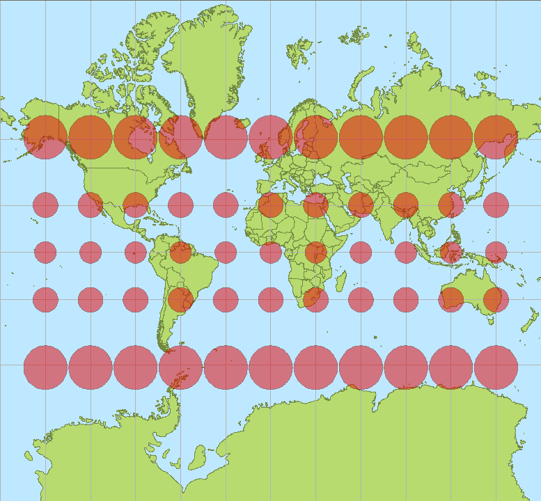

로 정의할 수 있으며, 두 점 사이의 거리를 그 두 점을 잇는 모든 곡선의 길이의 하한(infimum)으로 정의할 수 있다. 이 거리 함수는 매니폴드의 본래 위상과 양립하는 거리공간 구조를 유도한다.
중요한 사실: 매니폴드가 기술적 두 조건(서로 다른 두 점을 겹치지 않는 동네로 떼어 놓을 수 있다는 하우스도르프 조건, 셀 수 있는 개수의 열린 집합으로 모든 열린 집합을 짜 맞출 수 있다는 제2가산 조건)을 만족하면 언제나 리만 계량을 가질 수 있다. 단위분할(partition of unity)을 이용하여 국소적 내적들을 부드럽게 이어붙이면 된다. 따라서 "계량이 존재하는가"는 문제가 아니고, "어떤 계량을 고르는가"가 진짜 질문이다.
리만 계량 (부드러운 자 / Smooth Ruler) — 점마다 부드럽게 변하는 양의 정부호 계량 텐서. 매니폴드 전체에 걸쳐 일관되게 거리를 재는 규칙이며, 이것 하나로 길이·각도·넓이·부피가 모두 정의된다.
구체적인 예를 하나 보자. 반지름 R인 구면을 구면좌표 (θ,ϕ)로 쓰면(θ는 북극에서 잰 각, ϕ는 경도) 계량은 다음과 같다.
적도(θ=π/2)에서는 dϕ 방향의 눈금이 R이지만, 극으로 갈수록 sinθ가 줄어들어 같은 dϕ 변화가 더 짧은 실제 거리에 해당한다. 비대각 성분이 0이라는 것은 경선과 위선이 어디서나 직각으로 만난다는 뜻이다. 메르카토르 지도에서 극지방이 부풀어 오르는 이유도 여기 있다. 지도는 dϕ를 어디서나 같은 폭으로 그리지만 실제 거리는 sinθ배로 줄어드니, 지도는 극에서 1/sinθ배만큼 과장한다.

따라 계산해 보기 1 — 위선 한 바퀴의 길이
북극에서 각 θ0만큼 떨어진 위선을 한 바퀴 도는 곡선은 γ(t)=(θ0,t), 0≤t≤2π다. 속도 성분은 θ˙=0, ϕ˙=1이므로 계량에 넣으면 gijγ˙iγ˙j=R2sin2θ0이다. 적분하면 다음과 같다.
지구(R≈6371 km)의 적도는 θ0=90∘라 약 40,030 km이고, 북위 60도 위선은 θ0=30∘라 sin30∘=1/2, 곧 약 20,015 km로 적도의 딱 절반이다. 메르카토르 지도에서는 두 선이 같은 길이로 그려진다.
첫 번째 위젯은 메르카토르 지도 위에 “실제로는 모두 같은 크기인” 작은 원(티소의 지시원)을 그린다. 위도를 움직이며 지도가 원을 몇 배로 부풀리는지, 그 배율이 구면 계량의 sinθ와 어떻게 맞물리는지 보자.
ML에서: 분포 공간의 눈금, 피셔 정보
정규분포 N(μ,σ2)들의 모임에서 평균 μ를 0.1만큼 옮기는 일은 어디서나 같은 크기의 변화일까? σ=1인 넓은 분포에서는 거의 티가 나지 않지만, σ=0.1인 좁은 분포에서는 분포가 확 달라진다. 이 차이를 재는 눈금이 피셔 정보 행렬이다. (μ,σ) 좌표에서 그 성분은 diag(1/σ2,2/σ2)로 σ에 따라 바뀌는 리만 계량이다. 같은 dμ=0.1이 σ=1에서는 길이 0.1, σ=0.1에서는 길이 1이 된다. 여기서 움직이는 것은 모델 분포의 매개변수이고, 계량은 "분포가 실제로 얼마나 달라졌는가"를 잰다.
문제 2 — 북위 60도 한 바퀴
계산 지구를 반지름 R=6371 km인 구로 보고, 북위 60도 위선 한 바퀴의 길이와 그 위선에서 경도 1도 사이의 거리를 구하라. 적도와 비교하면 몇 배인가?
같이 풀기 세션 2
김민준
공식 2πRsinθ에 θ=60∘를 넣으면 2π⋅6371⋅0.866≈34,667 km예요. 적도의 87%네요.
이서연
87%면 생각보다 긴데? 북위 60도면 오슬로나 헬싱키쯤이잖아. 지구본에서 보면 그 위선은 적도보다 한참 작던데.
선생님
서연 학생 감각이 맞아요. 민준 학생, 공식의 θ는 어디서부터 잰 각이었죠?
김민준
아, 북극에서부터요. 위도 60도면 북극에서는 30도 떨어져 있으니까 θ=30∘를 넣어야 해요. 그럼 sin30∘=0.5라서 약 20,015 km, 적도의 딱 절반이에요.
선생님
경도 1도 사이의 거리는요?
김민준
적도에서는 40,030/360≈111.2 km니까, 북위 60도에서는 그 절반인 약 55.6 km요. 메르카토르 지도에서는 이게 적도와 같은 폭으로 그려지니까 두 배로 부풀려진 거네요.
김민준
과제에서 각도를 도(degree)로 넣어야 하는데 라디안 함수에 넣어서 틀린 적이 있는데, 이번엔 기준점을 잘못 잡았네요. 조교님이 "변수 정의부터 읽으세요"라고 했던 게 이거였어요.
이서연
위도와 여위도가 sin과 cos을 바꿔 놓으니까, cos(위도)로 외우는 게 덜 헷갈리겠다.